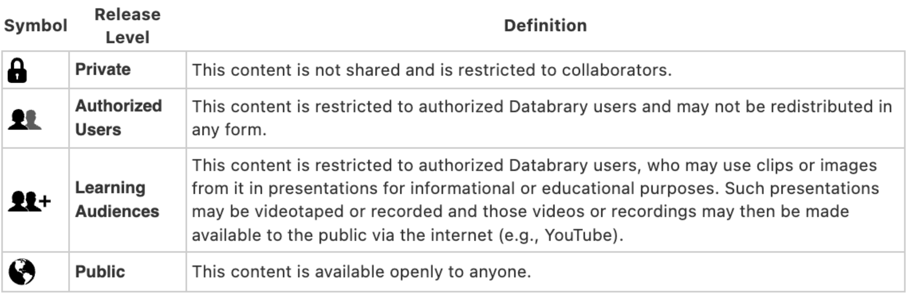

Specifics
The Databrary Access Agreement
Databrary restricts access to Authorized Investigators whose Institutions sign a formal Databrary Access Agreement.
The Databrary Access Agreement combines provisions for data use and data contribution. Unlike data use agreements that allow specific individuals access to a particular dataset for a discrete research purpose, the Databrary Access Agreement allows any Authorized Investigator to access all shared volumes on Databrary and use the volumes for many different Institutionally-approved purposes.
In addition, the Databrary Access Agreement permits Authorized Investigators to upload data and to share it with other Authorized Investigators in accord with the sharing permissions granted by participants and any required Institutional approvals.
Databrary believes that combining data use and data contribution in a single agreement reduces barriers to data sharing, meets emerging funder mandates to share research data, and accelerates progress in research.
The Use of Video Extends Beyond Research
In addition to its many uses in research, video may be used for a variety of pre-research and non-research uses, such as:
- Documentation of methodological details
- Demonstration of computer-based tasks
- Demonstration of video clips for teaching or scientific presentations
Databrary encourages the storage and sharing of video for all of these purposes, in a manner consistent with subject permissions and institutional approvals.
When to Involve a Research Ethics Board or IRB
Databrary does not require prior research ethics board or IRB approval for an Authorized Investigator to be granted access to the system or to use Databrary’s shared resources for non-research, educational, or pre-research uses.
However, in signing the Databrary Access Agreement, all Authorized Investigators agree to secure research ethics approval whenever their use of Databrary requires it under the Institution’s policies. Institutions determine which cases require research ethics board or IRB review and approval.
Uploading Data and Assigning Sharing Permission Levels
Authorized Investigators who upload data to Databrary must assign the level of data sharing granted by research participants to each file uploaded.
The sharing level assigned to each file by default is Private, meaning that no person other than the Authorized Investigator who uploaded the file and any Sponsored Researchers granted access by the Authorized Investigator, may view the file.
All newly created volumes are initially made Private, accessible only to an Authorized Investigator, any Sponsored Researchers the Authorized Investigator selects, and any other individual Authorized Investigators granted specific access to the volume
An Authorized Investigator may decide to create an overview of a volume when it is created and make the overview publicly available. The overview can serve as the public face of the volume while the data is being collected and analyzed. This can be useful in documenting progress on a research grant to sponsors. The volume overview does not expose data until the Authorized Investigator chooses to share the volume publicly.
Databrary and GDPR
Authorized Investigators may collect personal data from research participants who have rights under the General Data Protection Regulation (GDPR). GDPR governs the collection of personal data in the European Economic Area (EEA).
Databrary’s servers are currently located in the United States, and data stored on Databrary may be accessed, downloaded, and re-used by Authorized Investigators and their Sponsored Researchers located outside of the EEA. There are more than 800 Institutions across the globe that have signed the Databrary Access Agreement.
Databrary maintains a list of Authorized Investigators who have access to shared research data here.
In seeking permission to collect data from research participants governed by GDPR or similar provisions, Authorized Investigators should communicate to research participants information about who may have access to shared data on Databrary and where the data are stored. Institutions and Authorized Investigators assume responsibility for ensuring that research participants give sharing data permission that satisfies the provisions of GDPR and for abiding by other provisions of GDPR.
Databrary does not typically store information that links a participant’s identity to specific files unless there is a separate agreement between the Authorized Investigator, the Institution, and Databrary to store this type of data. Therefore, if a research participant requests a copy of data stored on Databrary or the modification or deletion of personal data that is stored on Databrary, the Authorized Investigator or Institution is responsible for responding to the request, not Databrary.
Databrary cannot guarantee that data previously shared with other Authorized Investigators via Databrary can be retrieved from all Authorized Investigators who accessed a participant’s personal data prior to its modification or removal. Thus, Authorized Investigators should communicate to research participants that there are limits to a participant’s right to modify or delete personal data that have already been shared on Databrary. The Sharing Release Template contains language for this purpose.
When accessing data shared by other Authorized Investigators, Institutions and their Authorized Investigators assume responsibility for ensuring that the sharing permission research participants have given in other contexts outside of the EEA meet relevant GDPR provisions.